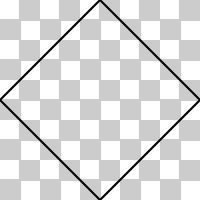

1 Introduction
Figure 1 shows a data visualization with a subtle feature on each circle.1 The border of each circle in the visualization is semi-transparent and the border of each circle becomes more transparent from left to right. We could argue about whether circles are the best representation of these values and whether the semi-transparent gradient is particularly helpful, but for the purposes of this paper, this image represents a specific example of a general problem: does R graphics allow us to produce the exact final image that we desire, or do the limitations of the R graphics engine force us to use external, manual software like Adobe Illustrator to perform additional modifications? Over the past few years, a number of capabilities have been added to the R graphics engine with the aim of being able to produce the exact final image that we desire entirely within R code.

Figure 1: A diagram with a semi-transparent linear gradient on each circle border.
For example, it is now possible to define a linear gradient in R. The following code defines a horizontal linear gradient from a light gray on the left to a very light gray on the right.
library(grid)
linearbg <- linearGradient(grey(c(.8, .99)),
x1=0, x2=1, y1=.5, y2=.5)The following code uses the linearbg gradient defined above to
add a subtle linear gradient background to a ggplot2 plot
(Wickham 2016) by setting
the fill in the plot.background
(see Figure 2).
library(ggplot2)
ggplot(mtcars) +
geom_point(aes(disp, mpg)) +
theme(plot.background=element_rect(fill=linearbg, colour=NA),
plot.margin=unit(c(1, 1, .25, .25), "cm"),
panel.background=element_rect(fill=NA, colour="black"),
panel.grid=element_blank())Figure 2: A ggplot2 plot with a subtle linear gradient background.
Only some of the new graphics features are available at this stage via high-level interfaces like ggplot2, as in the example above, so Section 2 will introduce the new features via a number of lower-level examples using the grid package. Section 2 will serve two purposes: to explain what the new features are and to show how they can be used (at least with grid). Section 3 will provide some examples of how to integrate the lower-level grid usage with higher-level packages like ggplot2, lattice, and base graphics plots. Section 4 provides a discussion of important limitations of the new features, how the new features relate to the capabilities of existing R packages, and pointers to further readings. For readers unfamiliar with the organization of R graphics systems, for example, the relationship between grid and ggplot2, the Appendix provides a brief overview.
2 The new graphics features
In this section, we introduce the new graphics features one by one. The aim is to explain each feature, show what it can do, and show how to use the feature with the grid package. Since grid will not be familiar for many R users, the examples will be kept as simple as possible and will involve only drawing basic shapes; Section 3 will provide some more complicated examples involving complete plots.
2.1 Gradient fills
There are new functions in the grid package for
defining gradient fills. For example,
we can use the linearGradient() function to
define a linear gradient based on a start point, an end point,
and a set of colors to transition between (along the straight
line between the start and end point).
In the following code, we use the rgb() function to
define two R colors, both blue, but one
almost opaque and one almost completely transparent.
Next we define a linear gradient that
transitions horizontally, left-to-right, between these two colors.
In grid, we can specify positions relative to a variety of
coordinate systems, but the default is a “normalized” system
where 0 means left/bottom and 1 means right/top (and .5
means the center).
gradient <- linearGradient(blues, x1=0, x2=1, y1=.5, y2=.5)The code above does not draw anything; it just defines a linear gradient.
In order to draw the gradient, we provide this object as the “fill color”
to a function that does draw something.
For example,
as we saw in the introduction, we can pass that linear
gradient object as the fill argument to the element_rect() function so that
ggplot2 will fill a rectangle with the gradient.
In grid, we can draw a shape with a fill color by calling
a function like grid.circle() and specifying
the fill argument to the gpar() function.
For example, the following code draws a circle with a "blue" fill.
By default, the circle is drawn in the center of the image and
r=.3 means that the radius of the circle is 30% of the width
of the image.
All of the images in this section will
have a light gray checkerboard pattern in the background
so that we can properly see any semi-transparency
in what we draw.
grid.circle(r=.3, gp=gpar(col=NA, fill="blue"))The following code draws a circle and uses the linear gradient that we
defined at the start of this section as the fill.
Notice that the location x1=0 in the linear gradient definition
refers to the “left” of the circle and
x2=1 refers to the “right” of the circle. In other
words, the gradient is relative to the bounding box of the shape
that is being filled. There are many other possibilities, including
using the unit() function to specify the locations of the start
and end points of the gradient in absolute units like inches
(though still relative to the shape’s bounding box) and we can also set
the fill on a grid viewport rather than on individual shapes.
The Further reading Section provides links
to several technical reports that demonstrate a wider range of
examples.
grid.circle(r=.3, gp=gpar(col=NA, fill=gradient))There is also a radialGradient() function for defining a gradient
that is based on a start circle and an end circle and a set of colors
to transition between. For example, the following code
defines a radial gradient that starts with radius r1=.5 and ends with
radius r2=0, transitioning from an almost opaque blue
to almost
fully transparent blue.
radial <- radialGradient(blues, r1=.5, r2=0)In the following code, the radial gradient is used to fill a circle.
The radii of the start and end circles of the gradient
are relative to the bounding box of the circle that is being filled,
so r1=.5 corresponds to the circumference of the circle being filled
and r2=0 corresponds to the center of the circle being filled.
grid.circle(r=.3, gp=gpar(col=NA, fill=radial))
Any shape can be filled with either a linear or radial gradient. For example, the following code fills a rectangle with the radial gradient defined above.
2.2 Pattern fills
It is now also possible to
fill a shape with a pattern fill with the help of the
pattern() function from the grid package.
The first argument to this function describes what to draw for the
pattern and subsequent arguments describe the size of the pattern - the
extent of the pattern tile - along with what happens outside of the
pattern tile.
As an example, we will look at the construction of the checkerboard pattern
that is being used as the background for the
images in this section.
The first step is to describe the shape for the pattern.
In this case, we use a call to rectGrob() to describe
two rectangles, both .1 inches square and filled with light gray,
with one rectangle just above and to the right
of center and one just below and to the left of center.
The grid function unit() is used to associate a value with
a coordinate system. In the "npc" coordinate system, 0
means left/bottom, 1 means right/top, and .5 means the
center, and in the "in" coordinate system, values are in inches.
The image below the code shows what this shape looks like
drawn on its own.
The following code creates a pattern based on this shape.
The size of the tile is .2” square and the tile will be repeated
to fill a region
(extend="repeat").
The image below the code shows the pattern tile (without repetition);
the extent of the tile is indicated by a red rectangle.
As with the linearGradient() and radialGradient() functions,
the result of a call to pattern() is just an object that describes a pattern;
nothing is drawn. We supply this pattern object as the fill for a shape
that is to be drawn.
For example, the object that we created with a call
to pattern() can be used as the fill graphical parameter
in grid functions. The following code draws a rectangle that is
the size of the entire image and fills it with the bg pattern.
The pattern tile is drawn in the center of the rectangle and
then repeated to fill the entire rectangle.

As with gradient fills, we can use the pattern to fill any shape. For example, the following code fills a circle with the checkerboard pattern.
grid.circle(gp=gpar(fill=bg)) 2.3 Clipping paths
A clipping region describes an area within which drawing will be visible.
By default, everything that we draw within the limits of an image is
visible, but we can set a clipping region to limit what gets drawn.
Rectangular clipping regions have been available in R graphics
for a very long time.
For example, in scatter plots, the data symbols are usually
clipped to the (rectangular) plot region. The code below
produces a ggplot2 plot with
the x-axis scale set to
exactly the range of the disp variable so that the left-most and right-most
data symbols are centered on the left and right edge of the plot region.
The ggplot2 package clips the drawing of the data symbols to the
plot region so only
half of the left-most and right-most data symbols are drawn
(see Figure 3).
ggplot(mtcars) +
geom_point(aes(disp, mpg), size=3) +
scale_x_continuous(expand=c(0, 0)) +
theme(plot.margin=unit(c(1, 1, .25, .25), "cm"),
panel.background=element_rect(fill=NA, colour="black"),
panel.grid=element_blank())Figure 3: A ggplot2 plot with the left-most and right-most data symbols clipped to the edges of the plot region.
In grid, a clipping region can be defined when we push a viewport. A viewport is a rectangular region that defines a temporary coordinate system for drawing, plus some other parameters like the clipping region. For example, the plot region on a ggplot2 plot is a grid viewport that provides coordinates for drawing data symbols, with clipping turned on so that nothing is drawn outside the plot region.
The following code provides a simple demonstration of a viewport.
First, we describe two circles, one centered on the left edge of
the image and one centered on the right edge of the image.
The circleGrob() function is similar
to the grid.circle() function, except that it just creates a
description of a circle and does not draw anything.
The grid.draw() function draws the circles.
Because the circles are centered on the edges of the image,
we can only see half of each circle.
gradient2 <- linearGradient(blues, x1=0, x2=1, y1=.5, y2=.5,
group=FALSE)
circles <- circleGrob(x=0:1, r=.5, gp=gpar(col=NA, fill="blue"))
grid.draw(circles)In the following code,
the viewport() function describes a viewport that is only 50%
of the width and 50% of the height of the image. The
pushViewport() function creates that viewport on the image.
We then call the grid.draw() function to draw the circles again,
but now we are within the viewport,
so the circles are drawn centered on the left and right edges
of the viewport. Furthermore,
the radius of the circles (.5)
now means 50% of the width of the viewport, so the circles
are also drawn smaller than before. Notice that the circles
extend beyond the edges of the viewport because, by default,
there is no clipping region.
The popViewport() function removes the viewport from the image
(so further drawing would be at full size).
In the image below, a red rectangle has been drawn just to show
the extent of the viewport, but normally nothing is drawn when
a viewport is created.
pushViewport(viewport(width=.5, height=.5))
grid.draw(circles)
popViewport()The following code demonstrates the idea of clipping to a viewport.
We push a viewport again, but this time the viewport has clipping
turned on (clip=TRUE). A purple rectangle
shows the extent of this viewport. When we draw the circles within
this viewport, drawing
is limited to the extent of the viewport, so half of the
left circle and half of the right circle are clipped.
pushViewport(viewport(width=.5, height=.5, clip=TRUE))
grid.draw(circles)
popViewport()This idea of a clipping region has now been extended to a clipping path so that we can limit drawing to a region that is any shape at all, not just a rectangle. For example, the following code describes a diamond shape that we will use as a clipping path. This code does not draw anything, but the shape is shown below the code anyway just so that we know what it looks like.
diamondPath <- polygonGrob(c(0, .5, 1, .5), c(.5, 1, .5, 0))
The following code pushes a viewport again,
but this time sets the clipping region for the viewport
to be the diamond shape that we defined above.
Now, when we draw the two circles within this viewport,
only the parts of the circles that lie within the diamond-shaped
clipping path are visible.
Just as a guide, a red rectangle has been drawn to show the extent
of the viewport that we have pushed, and a purple diamond has been
drawn to show the extent of the clipping path. Notice that the
location and size of the diamond path is relative to the viewport,
so 0 is the left/bottom of the viewport and 1 is the right/top of
the viewport.
pushViewport(viewport(width=.5, height=.5, clip=diamondPath))
grid.draw(circles)
popViewport()2.4 Masks
Masks are similar to clipping paths in that they constrain what parts of a shape are visible. However, a mask provides greater flexibility because it allows intermediate levels of semi-transparency; a clipping path effectively only allows either fully opaque or fully semi-transparent masking.
A mask, like a clipping path, can be based on any shape. For example, the following code describes a diamond shape (that is filled black). This code does not draw anything, but the diamond is shown below the code anyway so that we know what it looks like.
diamondMask <- polygonGrob(c(0, .5, 1, .5), c(.5, 1, .5, 0),
gp=gpar(fill="black"))Also like clipping paths, we can enforce a mask when we push a viewport. The following code pushes a viewport that is half the width and half the height of the total image and enforces the mask defined above and then draws the two blue circles. The mask works by transferring its opacity to the circles. Where the mask is opaque, the circles are drawn normally and where the mask is transparent, the circles are not drawn at all. The effect of this mask is exactly the same as the clipping path example from the previous section.
pushViewport(viewport(width=.5, height=.5, mask=diamondMask))
grid.draw(circles)
popViewport()The additional flexibility that is available with masks comes from
the fact that the mask may have fully opaque areas and fully
transparent areas and areas of semi-transparency.
For example, the following code defines a more complex shape.
This shape is a square with opaque corners and a semitransparent
diamond in the middle (again, the shape is shown below the code
just for reference; the code does no actual drawing).
In this code, the grobTree() function is used to describe a mask
that is made up from two shapes:
a polygonGrob() that describes the semitransparent diamond and
a pathGrob() that describes the opaque corners.
When we push a viewport with this mask, and draw the two circles, the result is the original circles where the mask is opaque and a semitransparent version of the circles where the mask is semitransparent.
pushViewport(viewport(width=.5, height=.5, mask=alphaMask))
grid.draw(circles)
popViewport()The masks used above are examples of alpha masks. They work by transferring the “alpha channel”, or opacity, of the mask to the shape that is being drawn. It is also possible to define luminance masks. With a luminance mask, areas of the mask that are white mean that drawing will occur normally, areas that are black mean that no drawing will occur, and areas that are gray produce semi-transparent drawing.
2.5 Stroked and filled paths
Another new feature in R graphics is the ability to stroke and/or fill a path, where the path is defined by one or more other shapes. As an example, we will look at producing the “square with opaque corners” from the previous section on masks.
The code below is similar to the code used in the previous section
(and the shape that it draws is shown below the code).
This code uses the grid.path() function and it is relatively complex
because it has explicit x and y locations to describe the corners of
a square followed by the corners of a diamond and an id argument
to divide the x and y locations into separate shapes (square and diamond).
The rule="evenodd" argument means that the interior of the path
(that is filled with black) is inside the square, but not inside the diamond.
The idea with stroked and filled paths is that we can describe more
complex shapes like this by combining simpler shapes instead
of having to specify explicit x and y locations.
For example, the following code draws the same shape using
grid.fillStroke(), which allows us to describe the shape as a
combination of a simple rectangle, with rectGrob(),
and the diamondPath that we defined
earlier.
grid.fillStroke(grobTree(rectGrob(), diamondPath),
rule="evenodd",
gp=gpar(fill="black"))
The following code shows a similar example, this time creating a
square with rounded corners by combining a rectangle with a circle.
This shape would be much harder to describe using pathGrob() and
explicit x and y locations.
grid.fillStroke(grobTree(rectGrob(), circleGrob()),
rule="evenodd",
gp=gpar(fill="black"))
We can also use stroked and filled paths to stroke the outline
of text. Normally, we can only draw filled text in R, but the new
grid.stroke() function treats its first argument as just a path
to draw the outline of. For example, the following code strokes the
outline of the text “path”.
grid.stroke(textGrob("path", gp=gpar(cex=2.5)))2.6 Compositing operators
Normally when we draw two shapes in R, the second shape is drawn on top of the first shape; if the two shapes overlap, the second shape will obscure the first shape. For example, the following code defines two concentric circles, a larger one with a blue fill and a smaller one with a black fill.
circle1 <- circleGrob(r=.35, gp=gpar(col=NA, fill="blue"))circle2 <- circleGrob(r=.25, gp=gpar(col=NA, fill="black"))
If we draw these circles, one after the other, the black circle partially obscures the blue circle. In technical terms, the black circle is composited with the blue circle using an “over” operator.
The grid.group() function in R allows us to select a different
compositing operator. For example, the following code
draws the two circles again, but this time using a “dest.out”
operator, which means that, instead of drawing the black circle
on top of the blue circle, the blue circle is removed where it
is overlapped by the black circle (and the black circle is not
drawn at all).
grid.group(circle2, "dest.out", circle1)The ability to control the compositing operator provides us with one way to draw a circle with a semi-transparent gradient border that we saw in the very first example in the Introduction. First, we define two circles, one with a semi-transparent gradient fill and one with a black fill.
dst <- circleGrob(r=.35, gp=gpar(col=NA, fill=gradient))src <- circleGrob(r=.25, gp=gpar(col=NA, fill="black"))
Then we composite the black circle with the semi-transparent circle,
using "dest.out", which creates a hole in the semi-transparent circle.
The result is a circle with a semi-transparent
gradient border.
grid.group(src, "dest.out", dst)
The full set of Porter-Duff compositing operators (Porter and Duff 1984) are available along with a set of “blend modes” from the PDF language specification (Adobe Systems Incorporated 2001).
3 Integrating with higher-level interfaces
In this section we look at several more complex examples to show how the new graphics features might be used as part of a high-level plot.
Some features are already accessible via high-level interfaces like
ggplot2 and its extension packages. We saw one example of
adding a background linear gradient to a ggplot2 plot
in Figure 2.
Furthermore, the following code demonstrates that some ggplot2 extension
packages also already make use of the new graphics features. In this case,
we are using the stat_gradientinterval() function from the
ggdist package (Kay 2023)
to draw linear gradients that represent within-group variability
(see Figure 4).
2
In theory, any package that extends ggplot2 can potentially
make use of the
new features because extending ggplot2 involves writing
grid code.
library(ggdist)
library(distributional)
ggplot(TGsummary) +
stat_gradientinterval(aes(x=dose, ydist=dist_normal(len.mean, len.sd))) +
facet_wrap("supp")Figure 4: A ggdist plot that uses linear gradients to represent variability within groups.
3.1 Integrating with ggplot2
Where there is no interface yet for new graphics features in ggplot2 or its extension packages, it is possible to access the new graphics features using the gggrid package (Murrell 2022a). For example, the following example uses gggrid to access the new feature for drawing stroked paths in order to draw outlined text within a ggplot2 plot.
The first step is to write a function that generates a description of
something to draw. The following code first creates a textGrob()
and then creates a strokeGrob() that will draw the outline of the text
with a thick white line.
The function returns a grobTree() that will draw the original
text on top of the thick white outline.
The following code draws a faceted ggplot2 plot, where each panel
consists of an array
of yellow and gray tiles.3
The call to grid_panel() means that the outlineLabel()
function that we defined above
is called for each panel of the plot, which
adds the outlined text to each panel (see Figure 5).
ggplot(judges) +
geom_tile(aes(x, y, fill=race), color="white", lwd=.7) +
grid_panel(outlineLabel, aes(percent=Freq), data=judgeCounts) +
facet_wrap("president") +
scale_fill_manual(values=c(white="#F8C216", other="grey80")) +
theme_void() +
theme(aspect.ratio=1,
legend.position="none")Figure 5: Outlined text on a ggplot2 plot produced with the gggrid package and stroked paths.
This particular result (outlined text) can also be produced using the shadowtext package (Yu 2022). However, that package currently produces outlined text by drawing 17 different copies of the text (slightly offset from each other) to get the final result. This is an example where an existing package may be able to gain some efficiencies by adopting some of the new graphics features.
3.2 Integrating with lattice
The lattice package (Sarkar 2008) provides an alternative high-level plotting system. For example, the following code uses lattice to draw a line plot representing two mathematical functions. The plot has a transparent background and heavy grid lines, which creates a problem where the legend overlaps with the grid lines (see Figure 6).
xyplot(y1 + y2 ~ x, type="l", lwd=3, col=2:3,
panel=function(...) {
panel.grid(h=-1, v=-1, col="black")
panel.xyplot(...)
},
key=key)Figure 6: A plot of two mathematical functions drawn with the lattice package. The checkerboard pattern is there to show that the plot itself has a transparent background.
The lattice package, like ggplot2,
is based on grid, and we can easily access the grid
interface to new graphics features by calling grid functions
from within the panel function in the xyplot() call.
We will use this to access the new masking feature so that the
drawing of the grid lines
does not overlap with the legend.
The first step is to use the draw.key() function from lattice,
which gives us a grid object that describes the legend that lattice
will draw.
The following code defines a mask, based on that keygrob,
that is a black rectangle with a hole
where the legend will be drawn. This uses a filled path that is
based on a much larger rectangle with the keygrob inside it to create
the hole.
Now we can draw the lattice plot again, but this time we push
a grid viewport that enforces the keyMask and draw
the grid lines within that viewport. This means that
the grid lines are not drawn where they overlap with the legend
(see Figure 7).
xyplot(y1 + y2 ~ x, type="l", lwd=3, col=2:3,
panel=function(...) {
limits <- current.panel.limits()
pushViewport(viewport(mask=keyMask,
xscale=limits$xlim,
yscale=limits$ylim))
panel.grid(h=-1, v=-1, col="black")
popViewport()
panel.xyplot(...)
},
key=key)
Figure 7: A lattice plot with a mask used to only draw the grid lines where they do not overlap with the legend. The checkerboard pattern is there to show that the plot itself has a transparent background.
3.3 Integrating with base graphics
There is no interface to the new graphics features for the base graphics system (the graphics package) or packages that build on it. However, the gridGraphics package (Murrell and Wen 2020) can be used to convert base graphics to grid and then the grid interface can be used to access the new graphics features.
For example, the following code uses base graphics to draw a map with a set of contour regions overlaid (see the map on the left in Figure 8).
Figure 8: Left: A set of contours drawn on top of a map using base graphics; Right: The same map, converted to grid graphics using the gridGraphics package, with the contours clipped by using the boundary of the map as the clipping path.
The following code redraws the map, but
uses the new clipping paths feature to clip the
contour regions with the map boundary as the clipping path.
The first step is to draw the map as before, but this time we also
record the coordinates of the map outline and use them to create
a clipping path.
Next, we use the grid.echo() function from the gridGraphics package
to convert the map into a grid drawing, which includes a set
of grid viewports.
We navigate to the viewport where the map was drawn
("graphics-window-1-0A") so that we have the correct coordinate
system and then we push a viewport with the clipping path.
Finally, we draw the contour regions, which are clipped
to the outline of the map (see the map on the right of
Figure 8).
par(mar=rep(2, 4))
outline <- map("nz")
clipPath <- polylineGrob(outline$x, outline$y, default.units="native")
library(gridGraphics)
grid.echo()
downViewport("graphics-window-1-0A")
cvp <- current.viewport()
pushViewport(viewport(xscale=cvp$xscale, yscale=cvp$yscale,
clip=clipPath))
invisible(mapply(function(c, col, fill) {
grid.polygon(c$x, c$y, default.units="native",
gp=gpar(col=col, fill=fill))
},
contours, colours, fills))
grid.draw(clipPath)
popViewport()3.4 Drawing with grid
In some cases, it can be easier to produce a complete plot just using grid, rather than using a high-level system like lattice or ggplot2. With this approach, all of the new graphics features are available. For example, the following code draws the original example from Figure 1 (reproduced again in Figure 9).
First, we define a linear gradient (gray that becomes more transparent from left to right) and then we define a function that draws a circle with that linear gradient as its border (as described in the section on compositing operators).
library(grid)
grad <- linearGradient(rgb(0, 0, 0, c(.5, .1)),
y1=.5, y2=.5)
gradientCircle <- function(y, r) {
circle1 <- circleGrob(y=unit(y, "native"),
r=unit(r, "native") + unit(1.5, "mm"),
gp=gpar(col=NA, fill=grad))
circle2 <- circleGrob(y=unit(y, "native"),
r=unit(r, "native") - unit(1.5, "mm"),
gp=gpar(fill="white"))
grid.group(circle2, "dest.out", circle1)
}The main plot is drawn by dividing up the image into columns, using
a grid.layout(), with each
column the correct width for one of the circles.
We then run a loop and, for each circle, we push a viewport into
one of the layout columns, call the gradientCircle() function to
draw a circle, add a text label at the
center of the circle, add another label above the circle, and
draw a line segment that starts just above the first label and ends just below
the second label (see Figure 9).
grid.rect(gp=gpar(col=NA, fill="grey95"))
pushViewport(viewport(width=unit(1, "npc") - unit(3, "mm"),
y=unit(1.5, "mm"), just="bottom",
layout=grid.layout(1, numCircles,
widths=circleWidths, heights=h,
respect=TRUE)))
for (i in 1:numCircles) {
pushViewport(viewport(layout.pos.col=i, yscale=c(0, h)))
gradientCircle(circleRadii[i], circleRadii[i])
amountGrob <- textGrob(paste0(amount[i], "%"),
unit(.5, "npc"),
unit(circleRadii[i], "native"),
gp=gpar(col=purple,
fontface="bold",
cex=1 + amount[i]/max(amount)))
labelGrob <- textGrob(toupper(label[i]),
.5, .7,
just="bottom",
gp=gpar(fontface="bold", cex=.7, lineheight=1))
grid.draw(amountGrob)
grid.draw(labelGrob)
grid.segments(.5,
grobY(amountGrob, 90) + unit(2, "mm"),
.5,
grobY(labelGrob, 270) - unit(2, "mm"),
gp=gpar(col=purple, lwd=2))
popViewport()
}
Figure 9: A diagram with a semi-transparent linear gradient on each circle border. This is a reproduction of the original image from the Introduction.
4 Discussion
Since R 4.1.0, support for a number of new graphics features has been added to the R graphics engine. These features are available via functions in the grid package, with some higher-level interfaces also appearing, for example in the ggplot2 package and its extensions.
A small number of examples have been provided to show how the new graphics features might be useful within the context of a statistical plot, but it is hopefully clear that a very large range of other graphical images could be generated with gradients, patterns, clipping paths, masks, compositing operators, and stroked/filled paths.
The trick to solving a particular graphical problem is being able to express the problem in terms of the graphical tools at our disposal. If we just want to draw a blue circle, we only have to know how to draw a circle and how to specify the color blue.
grid.circle(r=.3, gp=gpar(col="blue", fill="blue"))However, if we want to draw a circle with a thick semi-transparent gradient
border, we cannot express a solution in terms of circles and the color
blue. We need additional tools, like knowing how to describe a
linear gradient and knowing what the "dest.out" compositing operator does,
and how to define a group with a specific compositing operator.
grid.group(src, "dest.out", dst)By adding more graphical tools, we increase our ability to express problems in terms of our graphical tools and we give ourselves a better chance of finding solutions to graphical problems. As argued at the very beginning of this document, the ability to produce more complex and fine-detailed images, entirely in code, means that we can avoid costly and inefficient manual fine-tuning of our final images.
4.1 Limitations
It is important to note that not all of the new features
in the R graphics engine are supported
on all graphics devices.
Most features are fully supported on Cairo-based graphics devices, e.g.,
png(type="cairo") and svg(), though these devices do not support
luminance masks.
Most features are also supported on the
pdf() device, including luminance masks, but
the Porter-Duff compositing operators are not supported.
Most features are supported by the quartz() device (on macOS)
from R version 4.3.0, though not alpha masks and not paths based on text.
The grDevices::dev.capabilities() function can be used to report on
the level of support in the current graphics device.
Several R packages that provide graphics devices have also added at least some support for these features. For example, the ragg package (Pedersen and Shemanarev 2022) and the svglite package (Wickham et al. 2022) have support for gradients, patterns, clipping paths, and masks at least.
It is also important to note that
some PDF viewers do not render features like masks correctly,
so it may appear that the pdf() device is not working when in fact
it is a problem with the viewing software.
4.2 Related and prior work
Although support for gradients, patterns, clipping paths, and masks
has only been added to the R graphics engine (and supported
in some graphics devices, with a user interface in grid) since
R version 4.1.0,
at least some of these capabilities have been available in
some form via CRAN packages, in some cases for many years.
This section, acknowledges some of these packages and discusses
the advantages and disadvantages of having the capabilities
available in the R graphics engine.
The gridSVG package (Murrell and Potter 2022) has
provided an interface to many graphical features of the SVG language
(including gradients, patterns, clipping paths, and masks)
since 2011.
Some advantages of this package are that it provides access to
features that are still not available in the R graphics engine,
including filter effects (such as “blur”) and animation.
The downsides to this package include the fact that
it can only generate SVG output and it
can only work with graphics drawn by grid, although the
gridGraphics package can help with that.
The gridpattern and
the ggpattern packages both provide ways to fill regions
with a pattern. These packages make use of the
new features in the R graphics engine, e.g., to limit a pattern fill
to a region by setting a clipping path or mask. In other words, they
build upon the new features that are available in R itself.
Some of the advantages of these packages include:
a set of predefined patterns and, in the case of ggpattern,
a higher-level interface to pattern fills that is compatible with
ggplot2.
The ggfx package (Pedersen 2022) provides filter effects
at both the grid and ggplot2 level.
On one hand, this package complements the new features in the R graphics
engine by adding filter effects.
However, there is also a considerable overlap because several filters
provide results similar or identical to the graphics engine features.
For example,
ggfx::with_mask() provides masking and ggfx::with_blend() provides
compositing operators.
The advantages of this package include filter effects that are
not available in R itself (such as “blur”) and a high-level interface
that is integrated with ggplot2.
On the other hand, this package works only with raster images,
whereas the graphics engine is vector-based
so it can produce better quality scalable images, at least on
some devices.
The magick package (Ooms 2021) is not entirely unlike
ggfx in that it provides access to raster-based image
operations that include, for example,
magick::image_flatten() for compositing
operators, magick::image_composite(), which can perform masking,
and magick::image_blur() for a blur filter effect.
A major difference is that magick works on entire
images whereas ggfx can isolate its effects to only specific
elements of an image. A combination of magick
and the rasterize package (Murrell 2019) could be used
to limit the effects to just elements of an image, but ggfx
provides a more convenient and higher-level interface.
The gridGeometry package (Murrell and Wong 2022) overlaps
with some of the new masking, compositing, and path-drawing features
of the new graphics engine because
it can combine several paths to produce a single new path.
For example, gridGeometry::grid.polyclip() can be used to
punch a hole in one shape using another shape.
The advantage of this package is that, for the features that it
supports, it works entirely with
vector images, including returning vector results.
4.3 Further reading
The graphical features introduced in this document are explained in much greater detail in the series of technical reports listed below. Maintainers of R packages that provide third-party graphics devices will find information about the graphics device interface to the new graphics features in these reports.
“Catching Up with R Graphics: Gradients, Patterns, Clipping Paths, and Masks” (Murrell 2020)
“Becoming an R Graphics Groupie: Groups, Compositing Operators, and Affine Transformations in R Graphics” (Murrell 2021a)
“The Path to Path Enlightenment: Stroking and Filling Paths in R Graphics” (Murrell 2021c)
“Porter-Duff Compositing Operators in R Graphics” (Murrell et al. 2023)
5 Appendix: The structure of R graphics
This appendix gives a brief introduction to how the (static, 2D) graphics systems in R are organized (see Figure 10).
Figure 10: The structure of R graphics. The features described in this paper involved changes to the grid and grDevices packages, plus some of the graphics devices that are provided with R. Some of the features are becoming available via higher-level packages like ggplot2 and some of the features are supported in external graphics devices like those provided by the ragg package.
R has two low-level graphics systems, which are provided by the graphics (“base graphics”) and grid packages. These provide functions for drawing basic shapes and text. They both rely on a “graphics engine”, roughly corresponding to the grDevices package, which provides facilities for specifying things like colors and fonts.
The graphics package can also draw some high-level plots, such as scatter plots and bar plots, and many other packages build on it to offer a much wider range of high-level plots. Similarly, several packages build on top of grid to provide high-level plots, notably, ggplot2 and lattice.
Graphical output is generated by a set of “graphics devices”, some of which are provided with R, with others provided by packages like ragg.
Typically, an R user will call functions from a package like ggplot2
or graphics
to draw a high-level plot.
Those packages will call lower-level functions, in graphics
or grid, which in turn call functions in the graphics engine.
Finally, the graphics engine send instructions to a graphics device to
do the actual drawing.
The new graphics features described in this document have mostly involved changes to the graphics engine and grid and some graphics devices, which means that users may have to call grid functions to access the new features and the new features will only work on some graphics devices (as indicated by the gray nodes in Figure 10). However, some of the new features are accessible from ggplot2 and its extensions and some packages that provide graphics devices have added support (as indicated by the nodes with gray gradients in Figure 10).
5.1 Supplementary materials
Supplementary materials are available in addition to this article. It can be downloaded at RJ-2023-072.zip